| Menu Ferramentas |
|
Essa ferramenta
permite executar
as operações de processamento de dados de voo, como correção de
alinhamento de sensores,
calibração de sensores, correções anemométricas, obtenção de parâmetros
derivados, entre outras.
Os parâmetros e
curvas de
calibração de sensores usados no processamento são gerenciados na ferramenta
de edição de dados de calibração.
Clique em
“Ferramentas ► Processamento de dados
... ►
Processar dados” ou no botão na
Barra de Ferramentas.
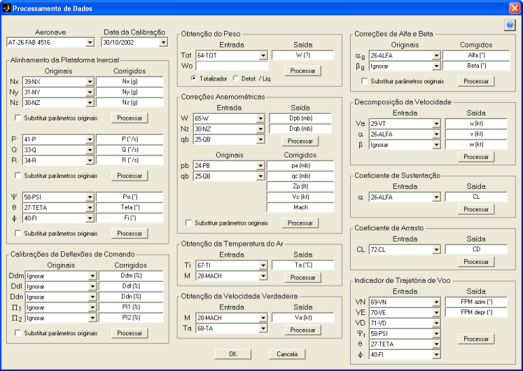
|
Nota: A ferramenta
requer resolução mínima de 1024 × 768
pixels e não executará em resoluções menores. |
Descrição
A ferramenta é
dividida em seções para a realização das
operações de processamento individualmente.
Cada seção
apresenta:
-
campos para
indicação dos dados de entrada necessários ao processamento;
-
campos para a
inserção dos nomes dos parâmetros de saída;
-
opção de
substituir os parâmetros originais pelos parâmetros corrigidos (algumas
seções); e
-
botão para
realizar o processamento da seção.
Operação
Antes de
iniciar o processamento, selecione a aeronave e a data
da calibração desejada.
Após o início
do processamento, não será possível alterar a
aeronave e a calibração escolhida.
Para realizar o
processamento de uma seção, indique os
parâmetros de entrada, os nomes dos parâmetros de saída, as opções
relevantes e
clique no botão da
seção desejada. Ao realizar o processamento
de uma seção, o respectivo botão mudará para e
os campos da seção serão desabilitados.
Os parâmetros
criados pelo processamento estarão disponíveis
para o processamento de outras seções.
Processamento
de Dados
Alinhamento da
Plataforma Inercial
Esse
processamento corrige os parâmetros lidos pela
plataforma inercial da instrumentação (acelerômetros, girômetros
e giro vertical) caso a mesma não esteja perfeitamente alinhada com os
eixos de
referência da aeronave. O erro de alinhamento é dado pelos ângulos
de Euler
da plataforma inercial com relação ao sistema do corpo da aeronave ( ,
,  e
e  ),
sendo também considerado um fator de correção de escala dos
acelerômetros (k).
),
sendo também considerado um fator de correção de escala dos
acelerômetros (k).
A matriz de
correção (L) é dada por:
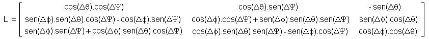
Para corrigir
os dados dos acelerômetros:
-
Selecione a
aeronave e a calibração desejada;
-
Indique os
parâmetros correspondentes aos fatores de carga lidos pelos sensores (Nx, Ny e
Nz) nos campos
“Originais” (em graus);
-
Indique os nomes
dos parâmetros corrigidos nos campos “Corrigidos”;
- Caso
deseje
substituir os parâmetros originais pelos corrigidos, marque a opção
“Substituir
parâmetros originais”;
-
Clique no botão
“Processar” e confirme.
A correção dos
fatores de carga é realizada segundo a
equação:
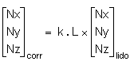
Para corrigir
os dados dos girômetros:
-
Selecione a
aeronave e a calibração desejada;
-
Indique os parâmetros
correspondentes às velocidades angulares lidas pelos sensores (P, Q e
R) nos
campos “Originais” (em graus por segundo);
-
Indique os nomes
dos parâmetros corrigidos nos campos “Corrigidos”;
- Caso
deseje
substituir os parâmetros originais pelos corrigidos, marque a opção
“Substituir
parâmetros originais”;
-
Clique no botão
“Processar” e confirme.
A correção das
velocidades angulares é realizada segundo a
equação:
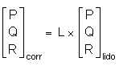
Para corrigir
os dados do giro vertical:
-
Selecione a aeronave e a calibração
desejada;
-
Indique os parâmetros correspondentes aos
ângulos e Euler lidos
pelos sensores ( 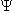 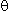 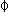
- Caso
o giro não possua informação de proa
(quando derivada da própria aeronave, por exemplo), selecione “Ignorar”
para ;
-
Indique os nomes dos parâmetros
corrigidos nos campos “Corrigidos”;
- Caso
deseje substituir os parâmetros
originais pelos corrigidos, marque a opção “Substituir parâmetros
originais”;
-
Clique no botão “Processar” e confirme.
A correção dos
ângulos de Euler da
aeronave é realizada segundo a equação:
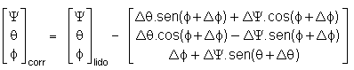
Correções
Anemométricas
A correção dos
erros anemométricos das sondas de pressão
estática (pb)
e dinâmica (qb) é
realizado obtendo-se os erros de posição (Δpb)
e velocidade (Δqb)
a partir das curvas polinomiais ajustadas aos parâmetros de entrada, de
forma a
obter pa e qc segundo as
equações:
pa
= pb
– Δpb;
qc
= qb
– Δqb;
Após a obtenção
de pa
e qc, é possível obter
a altitude-pressão corrigida (Zp),
a velocidade calibrada (Vc)
e o Mach verdadeiro (M)
pelas conversões
anemométricas padrão.
Para corrigir
ou criar os parâmetros anemométricos a partir
de pb
e qb:
-
Selecione a
aeronave e a calibração desejada;
- Os
parâmetros de
entrada necessários serão solicitados de acordo com os tipos de curva
cadastrados na calibração selecionada.
-
Indique os
parâmetros de entrada solicitados nos campos “Entrada”, nas unidades
apropriadas à curva ajustada;
-
Indique os nomes
dos parâmetros Δpb e Δqb nos campos “Saída”, caso
queira acrescentá-los a
matriz de dados;
-
Clique no
primeiro botão “Processar” e confirme;
-
Informe se
deseja acrescentar os parâmetros Δpb
e Δqb à matriz de
dados. Caso negativo, eles
serão armazenados temporariamente;
-
Indique os
parâmetros pb
e qb originais nos
campos “Originais”, em milibares;
- Caso
deseje
substituir os parâmetros originais pelos corrigidos, marque a opção
“Substituir
parâmetros originais”;
- Caso
a opção
“Substituir parâmetros originais” esteja marcada, indique os parâmetros
Zpb, Vb e Mb para
substituição, ou mantenha-os em “Ignorar”;
-
Indique os nomes
dos parâmetros corrigidos nos campos “Corrigidos”;
-
Clique no
segundo botão “Processar” e confirme.
Os tipos de
curva para correção do erro de posição são:

Os tipos de
curva para correção do erro de velocidade são:

Para maiores
informações, ver apostila E-B11 – “Introdução à
Aerodinâmica” da Divisão de Formação em Ensaios em Voo do IPEV.
| Nota: Para o
funcionamento das correções anemométricas é necessário ter instalado o Toolbox de anemometria do IPEV no caminho
do MATLAB. |
Obtenção da
Temperatura do Ar
A temperatura
do ar (Ta) é obtida a partir da temperatura de
impacto (Ti), do número de Mach
(M) e do fator de
recuperação da sonda de temperatura (K) segundo a equação:
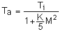
Para obter a
temperatura do ar:
-
Selecione a
aeronave e a calibração desejada;
-
Indique os
parâmetros correspondentes à temperatura de impacto (em °C) e ao Mach nos campos “Entrada”;
-
Indique o nome
do parâmetro de saída no campo “Saída”;
-
Clique no botão
“Processar” e confirme.
A unidade dos
parâmetros Ta e Ti é graus Celsius. Para
aplicação da equação, a conversão para Kelvin será feita
automaticamente pelo
programa.
Para maiores
informações, ver apostila E-B11 – “Introdução à
Aerodinâmica” da Divisão de Formação em Ensaios em Voo do IPEV.
Correções de
Alfa e
Beta
Os ângulos de
ataque e derrapagem verdadeiros (α e β) são obtidos a
partir dos ângulos
lidos pela sonda (αg e βg) através de
curvas de calibração polinomiais de até 3º
grau:


Para corrigir
os dados das sondas de α e β:
-
Selecione a aeronave
e a calibração desejada;
-
Indique os
parâmetros correspondentes aos ângulos de ataque e derrapagem das
sondas (em
graus) nos campos “Originais”;
- Caso
não haja
parâmetro de ângulo de derrapagem, selecione “Ignorar” para β;
-
Indique os nomes
dos parâmetros corrigidos nos campos “Corrigidos”;
- Caso
deseje
substituir os parâmetros originais pelos corrigidos, marque a opção
“Substituir
parâmetros originais”;
-
Clique no botão
“Processar” e confirme.
Para maiores
informações, ver apostila E-B11 – “Introdução à
Aerodinâmica” da Divisão de Formação em Ensaios em Voo do IPEV.
Obtenção da
Velocidade
Verdadeira
A velocidade
verdadeira (Va) é
obtida a partir do número de Mach
(M) e da
temperatura do ar (Ta), segundo a equação:
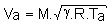
onde 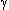
Para obter a
velocidade verdadeira:
-
Indique os
parâmetros correspondentes ao Mach
e à temperatura do
ar (em °C) nos campos “Entrada”;
-
Indique o nome
do parâmetro de saída no campo “Saída”;
-
Clique no botão
“Processar” e confirme.
A unidade de Ta
deve ser graus Celsius e a de Va
será nós. Para aplicação
da
equação, as conversões para Kelvin e para nós serão feitas
automaticamente pelo
programa.
Para maiores
informações, ver apostila E-B11 – “Introdução à
Aerodinâmica” da Divisão de Formação em Ensaios em Voo do IPEV.
Decomposição da
Velocidade
A velocidade
verdadeira (Va) pode
ser decomposta nos três eixos do sistema da aeronave (x, y e z) em
função dos
ângulos de ataque (α) e derrapagem (β).
Para decompor a
velocidade verdadeira:
-
Indique os
parâmetros correspondentes à velocidade verdadeira e aos ângulos de
ataque e
derrapagem (em graus) nos campos “Entrada”;
- Caso
não haja
parâmetro de ângulo de derrapagem, selecione “Ignorar” para β. Será
atribuído zero;
-
Indique o nome
dos parâmetros de saída nos campos “Saída”;
-
Clique no botão
“Processar” e confirme.
A decomposição
é feita segundo as equações:
u = Va
. cos(β) . cos(α)
v =
Va . sin(β)
w = Va . cos(β) . sin(α)
As unidades de
u, v e w serão a mesma de Va.
Coeficiente de
Sustentação
O coeficiente
de sustentação (CL) é obtido como
função do ângulo de ataque (α) através de
uma curva polinomial de
até 3º grau, na forma:

Para obter o
coeficiente de sustentação:
-
Selecione a
aeronave e a calibração desejada;
-
Indique o
parâmetro correspondente ao ângulo de ataque (em graus) no campo
“Entrada”;
-
Indique o nome do
parâmetro de saída no campo “Saída”;
-
Clique no botão
“Processar” e confirme.
Para maiores
informações, ver apostila E-B11 – “Introdução à
Aerodinâmica” da Divisão de Formação em Ensaios em Voo do IPEV.
Coeficiente de
Arrasto
O coeficiente
de arrasto (CD) é obtido como
função do coeficiente de sustentação (CL) através de
uma curva polinomial de
até 3º grau, na forma:
CD = K3.CL³
+ K2.CL²
+ K1.CL + CD0
Para obter o
coeficiente de arrasto:
-
Selecione a
aeronave e a calibração desejada;
- Indique o parâmetro correspondente ao
coeficiente de sustentação no campo “Entrada”;
-
Indique o nome
do parâmetro de saída no campo “Saída”;
-
Clique no botão
“Processar” e confirme.
Para maiores
informações, ver apostila E-B11 – “Introdução à
Aerodinâmica” da Divisão de Formação em Ensaios em Voo do IPEV.
Obtenção das
Componentes do Indicador de Trajetória de Voo (FPM)
As componentes
do indicador de trajetória de voo no eixo do corpo (azimute e
depressão, como vistos em um HUD)
podem
ser calculadas em
função das velocidades no sistema terrestre
móvel e dos ângulos
de Euler.
Para obter as
componentes do FPM:
-
Indique os
parâmetros correspondentes às velocidades no sistema
terrestre (Norte, Leste e para Baixo, numa mesma unidade) e os
ângulos de Euler (em graus) nos campos “Entrada” (a proa deve ser
verdadeira, não magnética);
-
Indique o nome
dos parâmetros de saída nos campos “Saída”;
-
Clique no botão
“Processar” e confirme.
Primeiramente
as velocidades são convertidas do sistema terrestre para o sistema do
corpo segundo a equação:
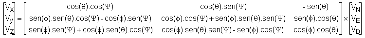
Depois, as componentes do FPM são obtidas segundo as fórmulas:
FPM azim = arctg (Vy
/ Vx)
FPM depr = arctg (Vz / Vx)
Ao invés de elevação será fornecida a depressão do FPM, para que o parâmetro possa ser utilizado no lugar do ângulo de ataque na ferramenta de reprodução do voo.
As unidades de
saída serão em graus.
Obtenção do Peso
O peso total da
aeronave ao longo do voo é fornecido a
partir da variação de combustível, assumindo que não haja separação de
cargas
ou munição durante o voo.
Existem três
métodos de cômputo de combustível:
-
Totalizador:
indica o combustível consumido a partir da integração do fluxo,
iniciando em
zero;
- Detotalizador: indica o
combustível restante a partir da
integração negativa do fluxo, iniciando com o combustível de partida; e
- Liquidômetro: indica o
combustível restante a partir da
medição direta nos tanques.
Caso o
parâmetro de combustível seja totalizador, o peso é
dado por:
W = W0
– Tot
Caso o
parâmetro de combustível seja detotalizador
ou liquidômetro, o peso
é dado por:
W
= Wzf
+ Detot
W = Wzf
+ Liq
onde Wo é o
peso inicial da aeronave e Wzf
é o peso da aeronave
sem combustível.
Para efeito de
cálculo, o detotalizador
e o liquidômetro
indicam o mesmo valor.
Para obter o
peso ao longo do voo:
-
Indique o tipo
de medição de combustível nos seletores “Totalizador” e “Detot.
/ Liq.”;
- Os
parâmetros de
entrada necessários serão solicitados de acordo com o tipo de medição
indicada.
-
Indique o
parâmetro de medição de combustível no campo “Tot”
ou
“Detot”;
-
Indique o valor
do peso inicial ou o peso zero-combustível
no campo “Wo” ou “Wzf”;
-
Indique o nome
do parâmetro de saída no campo “Saída”;
-
Clique no botão
“Processar” e confirme.
As unidades dos
parâmetros de entrada devem ser iguais, e
será a mesma do parâmetro de saída.
Calibração de
Deflexões de Comando
As deflexões de
comando (manche, pedais e manete) lidas pela instrumentação podem ser
convertidas em valores normalizados (
Para a
calibração das deflexões de comando, os valores de
deflexão mínima e máxima lidos pela instrumentação (batentes do curso)
serão
convertidos, respectivamente, nos valores -1 e 1,
e
multiplicados pelo fator de conversão k. O valor de deflexão neutra é
opcional
e, caso seja inserido, será convertido no valor zero.
Os valores de
deflexão serão interpolados ou extrapolados
linearmente em função desses pontos de controle.
As figuras
abaixo ilustram a interpolação dos valores de
deflexão lidos pela instrumentação para o intervalo [-k, k], com e sem
informação do valor neutro.
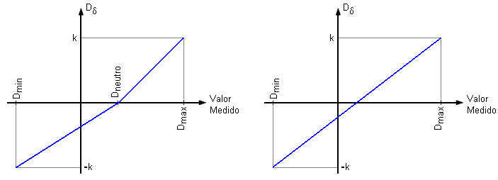
Para realizar a
calibração das deflexões de comando:
-
Selecione a
aeronave e a calibração desejada;
-
Indique os
parâmetros medidos de deflexões de comando nos eixos longitudinal (Ddm), lateral (Ddl), direcional
(Ddn) e os fatores
propulsivos dos motores 1 e 2 (π1
e π2) nos campos
“Originais”. No caso de helicópteros, π1
e π2 podem ser usado
como coletivo (Ddc) e throttle;
-
Indique os nomes
dos parâmetros corrigidos nos campos “Corrigidos” (com a unidade
adequada);
- Caso
deseje
substituir os parâmetros originais pelos corrigidos, marque a opção
“Substituir
parâmetros originais”;
-
Clique no botão
“Processar” e confirme.
Sair
Após realizar
os processamentos desejados, clique no botão
“OK” para confirmar as alterações e sair, ou no botão “Cancela” para
descartar
as alterações e sair.
| |
Editor
de dados de calibração |
Gerenciamento
de pontos de ensaio |
|